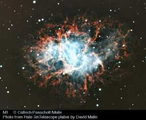
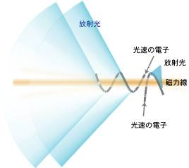
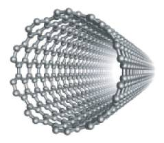
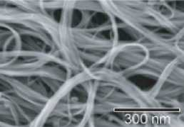
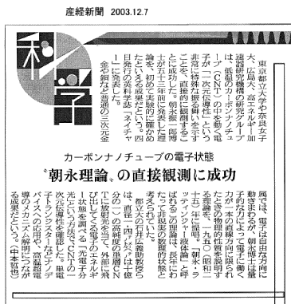
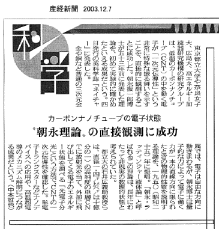

放射光で見るカーボンナノチューブの中の電子
〜〜理想的な１次元電子〜〜
放射光科学研究センターでは、真空紫外線から軟Ｘ線領域の放射光を用いた物質科学研究を展開しています。放射光源は、魔法のランプに喩えられ、放射光これまで人類が手に入れた光で最も強力なものです。

遠く彼方の銀河の中に一生を終えた星の姿を見ることができます。たとえば、「かに星雲：Ｍ＊＊星雲」をごらんください。ガス状の雲の中に点滅を繰り返す星−パルサーーがあります。周囲には、猛烈なスピードで広がる星間物質。華やかで美しい星雲の中では、パルサーによる強力な磁力、帯電した粒子（イオン）や電子が渦巻いており、星の爆発によって得られた猛烈な荷電粒子の嵐が渦巻いています。
このような星の輝きは、これらの高速で運動する荷電粒子が発する光なのですが、強力な磁力に巻き付くように運動する電子が発する強力な光が放射光なのです。
この放射光は、ほぼ光速で運動する電子が発する光で、様々な波長の光がまんべんなく混じった連続光でです。そのため肉眼には青白っぽい色に見えます。波長領域は、赤外線からＸ線まで広がっており、任意の波長の光を分光し取り出すことで基礎科学研究から加工などの応用分野まで様々な利用が可能となります。
この放射光を地上で生み出す装置が、放射光源（電子蓄積リング）です。放射光源は、ほぼ光速に加速された電子を長時間周回させる仕組みの加速器です。強力な磁力を発生するマグネットにより曲げられた電子は、永遠に同じ軌道を周り続けます。放射光は、光速の電子の軌道が磁力により曲げられた時に運動の接線方向に放射されます。
HiSOR では、真空紫外線〜軟Ｘ線域の放射光を用いて、主に固体中の電子の運動を詳細に調べ、固体物理学の基礎的な問題に挑戦しています。この巨大な「魔法のランプ」は、原子の世界を調べる究極のツールなのです。ここでは、最近の固体電子構造に関する研究を紹介しましょう。
カーボンナノチューブは金属、それとも絶縁体？？
炭素原子からなる２次元六員環ネットワーク１枚を筒状に丸めた構造を持っています。1991年、多層カーボンナノチューブが、翌年、単層カーボンナノチューブが発見されました。
実際の物質は、巻き方や直径の異なる多種の構造体の混合物で、1/3 が金属で残りの 2/3 が半導体となっています。
次世代半導体デバイスの材料として注目されており、非線形光学素子や薄型ディスプレイへの応用など、広い分野での応用が期待されています。
このカーボンナノチューブ中の電子について考えて見ましょう。１本の細い電線と考えると、この中を運動する電子はどのようになっているのでしょうか。
1950年、朝永振一郎氏は１次元金属の性質を説明するために、既存のフェルミ液体論（金や銅などの３次元金属の性質を説明する理論）とは全く異なる新しい概念をもつ理論を発表しました。
その後、ラッティンジャー氏が朝永氏の理論を展開し、現在の朝永-ラッティンジャー液体状態と呼ばれる、１次元金属中の電子を表現する理論を完成させました。しかし、１次元という空想の世界は現実の世界に見いだすことができず、検証できないため、非現実的で数理的な状態にすぎないと思われていました。
最近では、銅酸化物高温超伝導体、有機伝導体、準１次元酸化物の発見や超微細加工技術による量子細線の開発を契機に、低次元系の多彩な物理の典型例として1次元系の物理が注目されています。
カーボンナノチューブは１次元金属なのか、もしそうならば５３年間検証されずにいた朝永−ラッティンジャー液体状態を実際に観測できるのでは．．．．
カーボンナノチューブの中の電子は朝永−ラッティンジャー液体状態なのか、それとも通常のアルミニウムや銅のような３次元金属におけるフェルミ液体状態にあるのか？ この問題の解く鍵はカーボンナノチューブの光電子分光実験にあります。
物質に紫外線やＸ線を当てると、アインジュタインの光電効果によって物質内の電子が外部に飛び出してきます。放出された電子（光電子）のエネルギーを測定することで、物質内での電子状態（エネルギー、運動量、スピンの分布）がわかるのです。この実験は光電子分光と呼ばれ、放射光を励起光源とします。
放射光科学研究センターには、通常の電磁石からの放射光の１万倍強力な放射光を発生するアンジュレータ光源からの光を分光し、数 meV の精度で単色化する高分解能ビームライン (BL1) と -263 ℃ の極低温下における固体中の電子を放射光により取り出して、meV の分解能でエネルギーを決定できる高分解能低温光電子分光装置が稼働しており、極めて高精度の電子構造を決定することができます。

超高真空中 (10-9 Pa) に置かれたカーボンナノチューブに BL1 ビームラインからの光を照射し、真空中に放出された光電子のエネルギー分布を精密に観測します。
このようにして計測された光電子スペクトルを示します。
朝永−ラッティンジャー流体状態にある電子の場合、結合エネルギー (Binding Energy) = 0 のところ（フェルミレベル）からの光電子のエネルギー分布の形状が、エネルギーのベキ関数になる性質があります。データを解析すると、光電子のエネルギー分布は、結合エネルギー（ω）の 0.46 乗に比例して増大しています。温度を変化させて測定しても同じ結果となりました。
さらに、フェルミレベルでの光電子の強度の変化を調べると、温度 T の 0.48 乗に比例して増大していることがわかりました。
実験の結果、光電子の振る舞いは 0.46 〜 0.48 乗のベキ関数で特徴づけられる電子構造になっていることがわかりました。
この振る舞いは、５３年前に朝永振一郎氏が提唱した朝永−ラッティンジャー流体状態を表しており、この実験事実が同氏の理論の検証となったのです。
本研究成果は、英国科学雑誌 Nature (2003年12月4日号) に掲載されました。
Direct observation of Tomonaga-Luttinger-liquid state in carbon nanotubes at low temperatures
（カーボンナノチューブにおける低温での朝永-ラッティンジャー液体状態の直接観測）
H. Ishii, H. Kataura, H. Shiozawa, H. Otsubo, Y. Takayama, T. Miyahara, S. Suzuki, Y. Achiba, H. Yoshioka, M. Nakatake, T. Narimura,M. Higashiguchi, K. Shimada, H. Namatame and M. Taniguchi
東京都立大学、広島大学、高エネルギー加速器研究機構、奈良女子大学の共同研究です。
関連新聞報道
 
